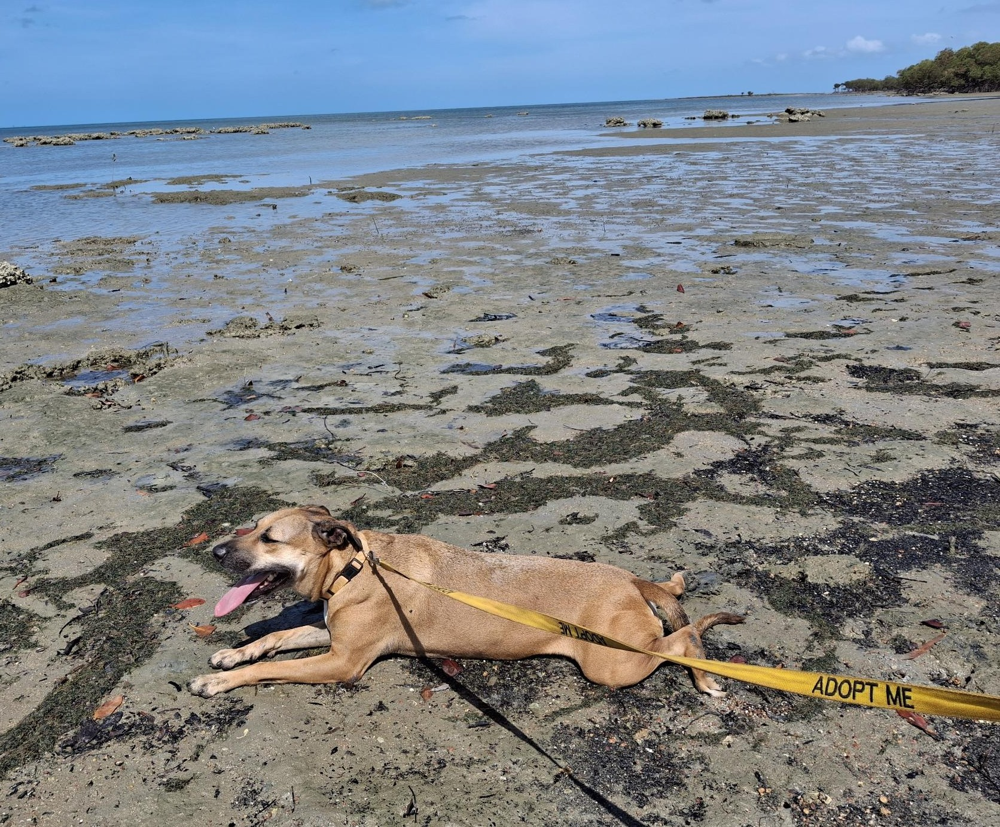

At Cape Animal Protection Shelter (CAPS), our volunteers are the heart of everything we do. As a community-based, volunteer-driven organisation, we rely on the dedication and generosity of people who share our passion for animal welfare. Whether you have a few hours to spare each week, can assist from home, or would like to take on a more active role within the organisation, there are many ways to get involved. From caring for animals and supporting adoptions to helping at events, transporting pets, fundraising, and assisting behind the scenes, every contribution makes a meaningful difference. By volunteering with CAPS, you become part of a team committed to giving vulnerable animals a second chance and creating positive outcomes for pets and people across our community.

Whatever your interests, skills, or amount of free time, there's a way for you to get involved at CAPS.
Give our dogs an adventure, take them home for a day, a weekend or several weeks.
Help define the direction and governance of CAPS, or support us in essential roles such as finance, secretarial, fundraising, and communications.
Help us spread the word about our work or raise essential funds by planning, organising or hosting our famous events like our spectacular morning tea.
Our dogs love all the exercise they can get, and we rely on volunteers to drop by mornings and afternoons to walk one dog, or as many as they have time for.
We really value volunteers who can come in to help feed the dogs, give them a wash, and clean out their cages. The dogs love the company and the care.
Are you going our way? We sometimes need dogs dropped off or picked up from locations across the Cape or down as far as Cairns, A ride can really make the difference to getting to their new forever home.
When owners travel dogs get lonely so a daily check in, feeding, walking and a bit of a yarn can make all the difference.
This one can be done from home. Slow-cooking chicken and rice gives the dogs a delicious treat.
Getting the word out about our dogs and our work is so important whether photos and video for facebook and insta posts, some big win stories, blog posts or posters and flyers we really appreciate help raising our profile.
Click the link below to fill in our online form and register, or give our caretakers a call and pop in for a tour to find out more.
Register to Volunteer ↗Prefer to chat first? Get in touch to arrange a tour.
See the FAQs below to find out more. Click a question to expand the answer.